What is an
AI skill?
A skill is a small folder that holds the method for one job, along with the examples, templates and files that job needs. You set it up once. After that you name the skill and the AI follows the whole method.
One week, one job, the same instructions typed four times. Tap each day to see what it costs you.
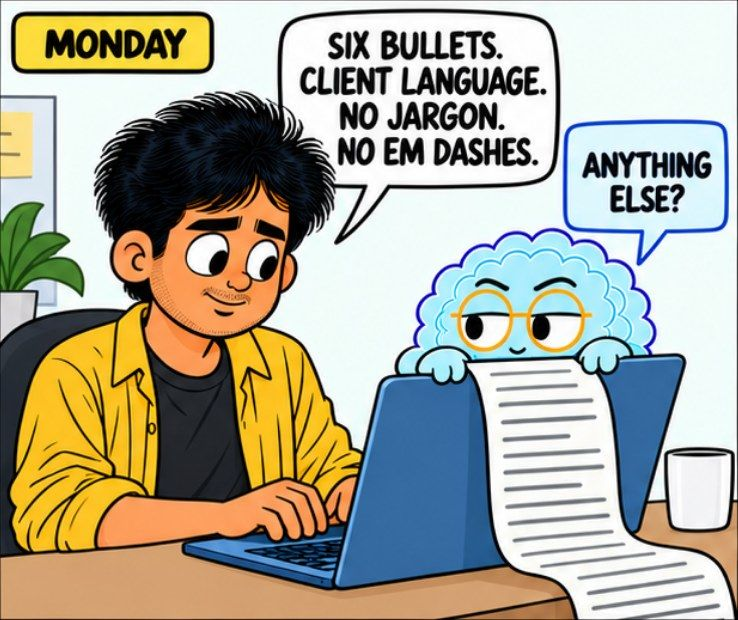
Monday
Time. A careful brief takes a minute or two to type. Do that four times a week across a year and you have spent days on instructions you already wrote once.
Drift. You never type it the same way twice. One day you ask for six bullets, the next day you forget, and the output quality moves around without you knowing why.
Forgotten steps. The rule you added last month because a client complained is the rule you leave out today, because it only lives in your head.
No shared standard. Your colleague briefs the AI in their own words, so the same job comes back in a different voice.
A folder that holds the method for one job. Instructions, examples, templates, reference files and sometimes small programs, all in one place. You call it by name and the AI follows the whole thing.
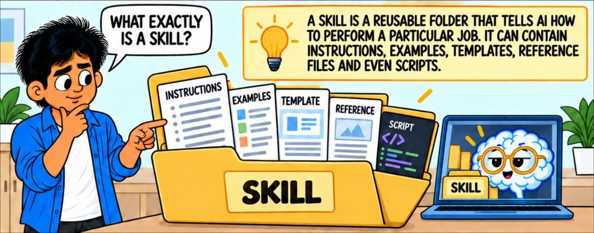
One job, one folder. Not a saved sentence. The instructions, the examples, the template, the reference material and any small programs sit together and travel together.
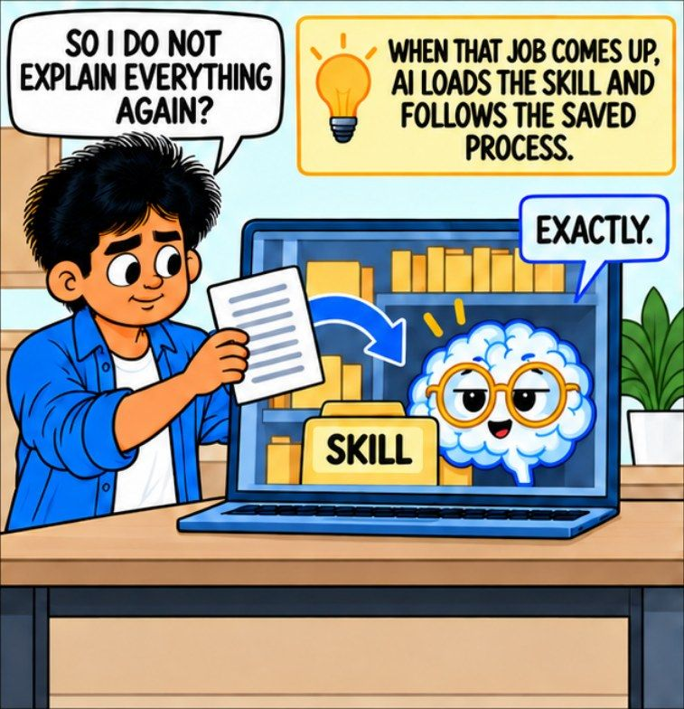
You stop explaining. When the job comes up, the AI loads the skill and follows the saved method without being walked through it.
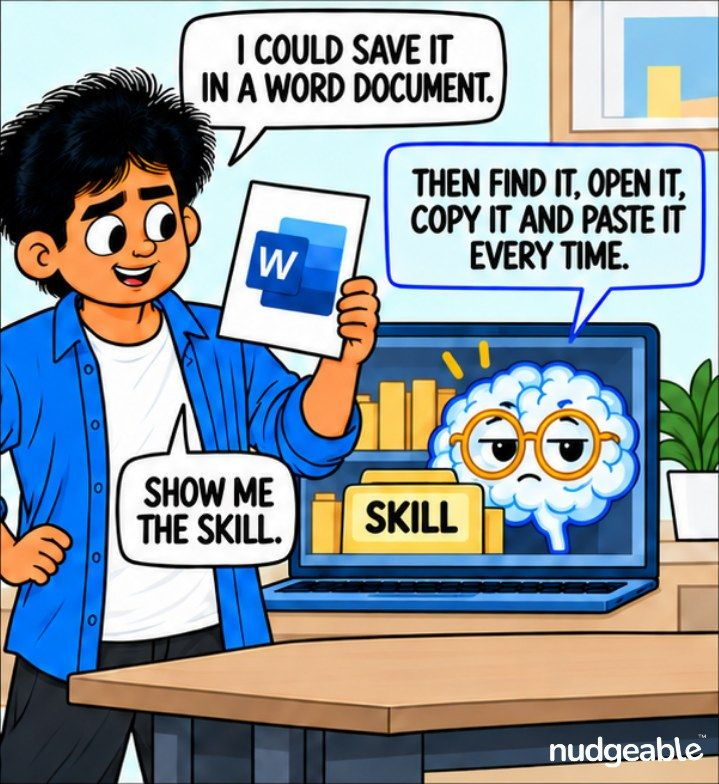
A saved document is not the same thing. A file in your drive still has to be found, opened, copied and pasted. A skill is picked up on its own.
The AI decides whether to use a skill by reading its name and its one line description, nothing else. Say what the skill does and when it should be used. A description that only says what it does will sit in your list unused.
A skill is read in three stages, and this is what makes a big folder cheap to keep around.
Always in view. Only the name and the one line description. It is tiny, so you can keep many skills without slowing down an ordinary chat.
Read when the job comes up. The main instructions file, once the description matches what you asked for.
Opened only if needed. The extra reference files and the small programs. A program can run and hand back only its result, so a large file never has to be read in full.
Official pages: Claude Skills, ChatGPT GPTs, Gemini Gems, Copilot agents.
Four things, and only the first one is required. Tap any card for the detail and which tools support it.
The instructions
The steps you want followed every time, written in plain words, plus the short line that says when this skill should be used.
Examples and templates
One finished piece of work you were happy with, and the template the output should sit in.
Reference files
The brand guide, the price list, the checklist, the policy, anything the job needs to look something up in.
Small programs
A skill can also carry small programs that handle a fixed step, such as building a file, checking a number or reformatting a table.
Everything you will ever do with a skill is one of these four. Tap through them in order.
You do not write it from scratch
Hand over the instructions you have already been typing all week and ask for them to be saved as a skill. The AI will ask what it should do and when to use it, then write and save the folder for you.
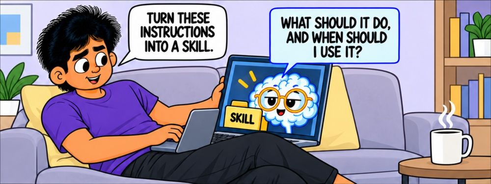
Start from what you already do. The best first skill is a job you did three times this month, not a clever idea you have never tested.
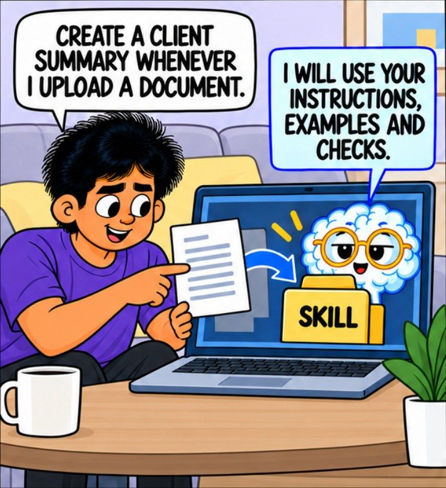
Say when it should run. "Create a client summary whenever I upload a document." That one sentence is what lets the AI pick the skill up later on its own.
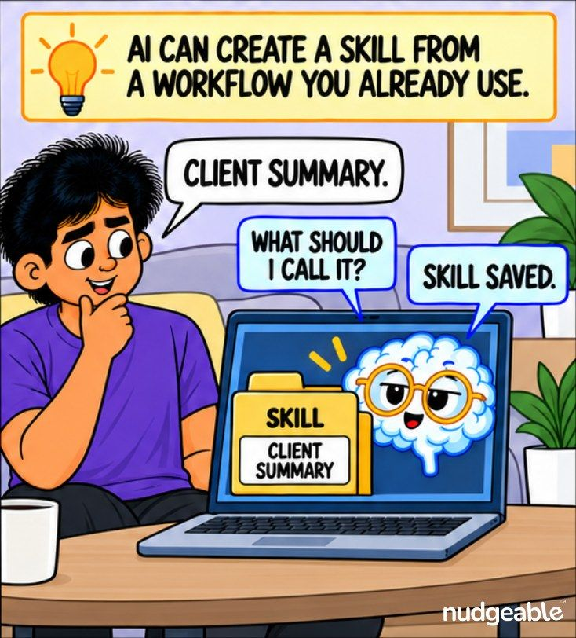
Name it and it is saved. A short, obvious name is easier for you to call and easier for the AI to match.
The name. Short, lowercase, no spaces on most tools. You will type it, so make it the word you would naturally reach for.
The description. One line that says what the skill does and when it should be used. "Writes a client summary" is a weak description. "Writes a six bullet client summary whenever a client document is uploaded" is the one that actually gets picked up.
Everything else can be fixed later. These two lines are what the AI reads before it has read anything else.
Three ways a skill gets picked up
You call it by name, the AI chooses it on its own from the description, or you lock it so that only you can start it.
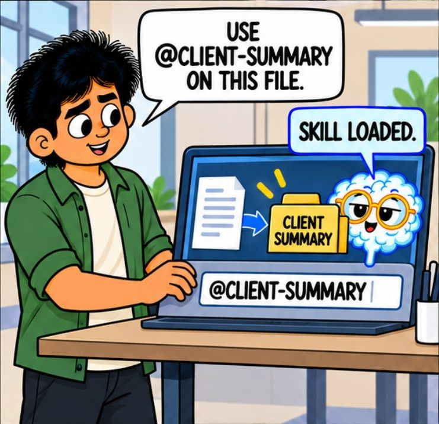
Call it by name. On most tools you type @ or / followed by the skill name, and it loads along with the file you are working on.
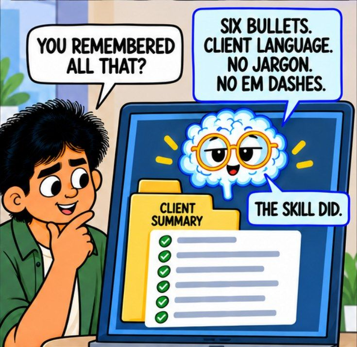
The method comes with it. Six bullets, client language, no jargon. You did not repeat a word of it, and you will not have to next week either.
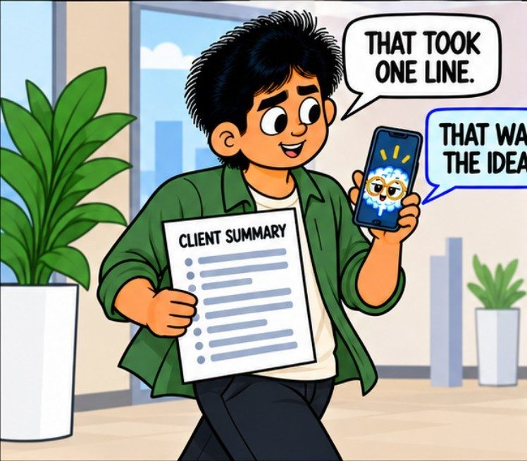
One line instead of a paragraph. The brief did not get shorter. It moved out of your typing and into the folder.
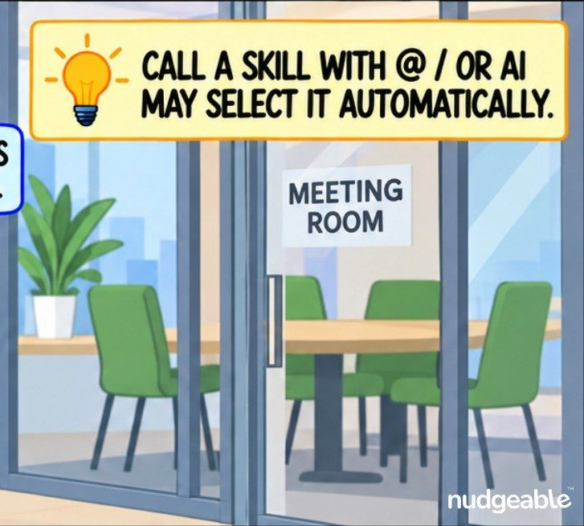
Or it chooses on its own. When your description is clear, the AI matches your request to the skill without you naming it.
Automatic pick up is what makes skills feel effortless, and it is exactly what you do not want for a job with a real world effect.
For anything that sends, posts, pays, publishes or deletes, set the skill so only you can start it. Most tools have a setting for this. The rule is simple: if you would want to look at it before it happened, do not let it start by itself.
A skill is meant to change
When the work changes, change the instructions or add a file. The skill keeps its name, so nothing you or your team has learned about it goes to waste.
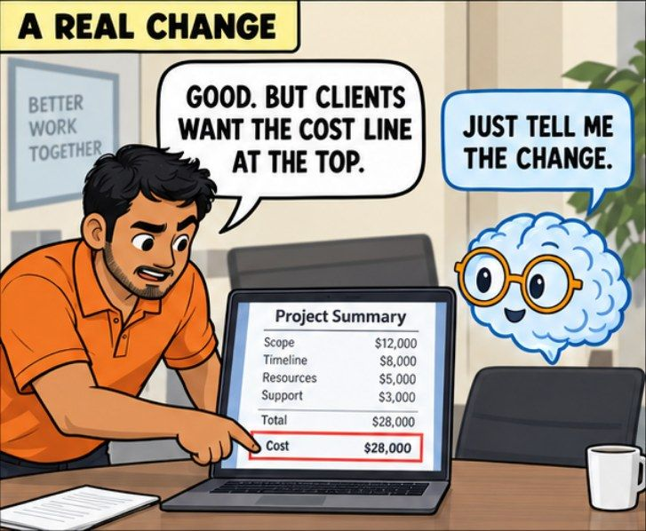
A real change comes in. Clients want the cost line at the top. That is one line of instruction, not a reason to start a new skill.
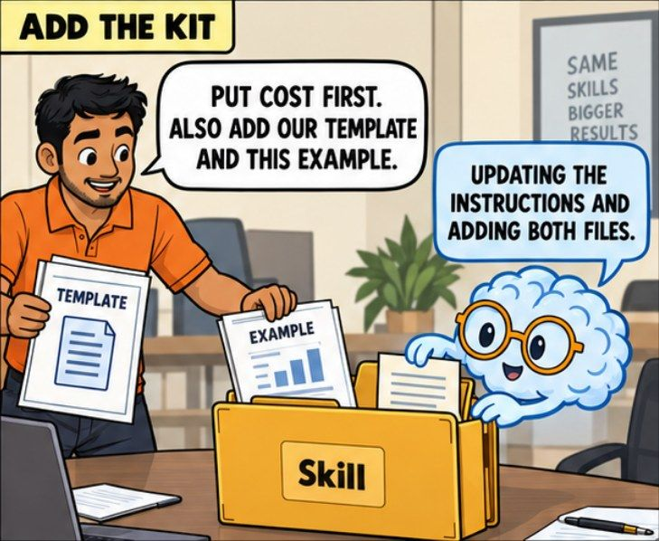
Add the kit, not only the words. Your template and a finished example belong in the folder next to the instructions.
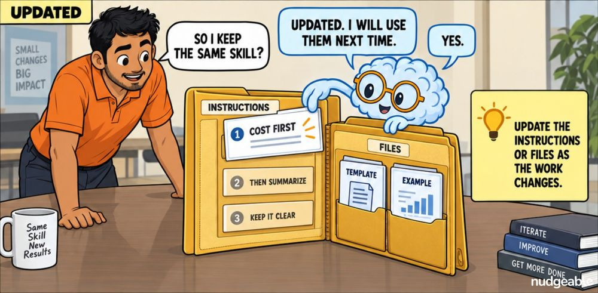
Same skill, better result. Small corrections added over a few months are what turn a rough first skill into the one you trust.
The most common mistake after a few months is a main instruction file that has grown to several pages. Everything gets read, the important rules get buried, and the output gets worse rather than better.
Keep the main file to the steps and the rules. Move the long material, the reference tables and the background reading into separate files in the same folder. They are only opened when the job calls for them.
One person's method becomes the team's
Download the skill as a package, send it, and the other person installs it in their own AI login. They get the instructions, the template and the example, not a description of them.
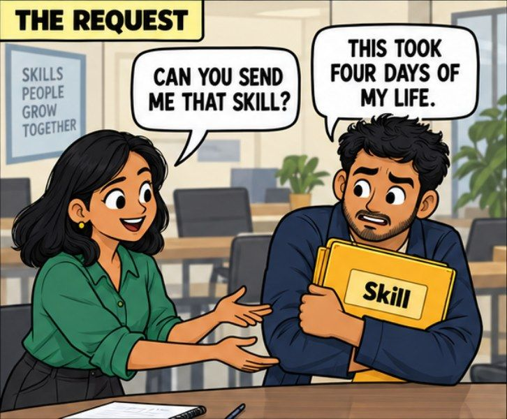
The ask arrives on its own. A skill that works gets noticed, because the output stops looking like it came from four different people.
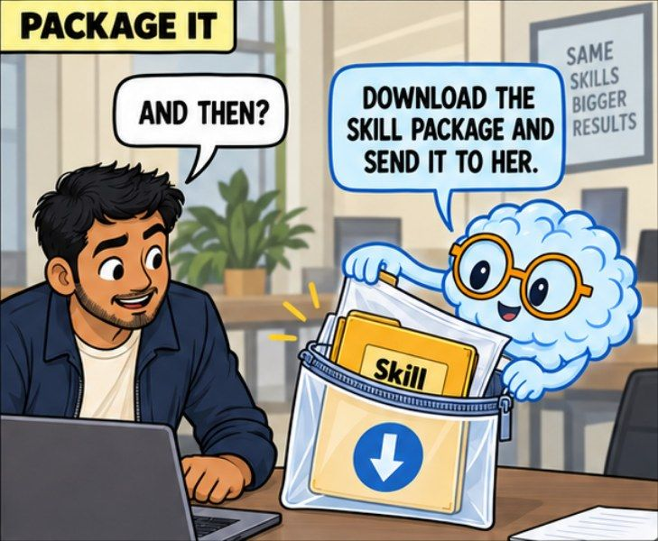
It travels as one package. The whole folder goes across, so nothing important stays behind in your head.
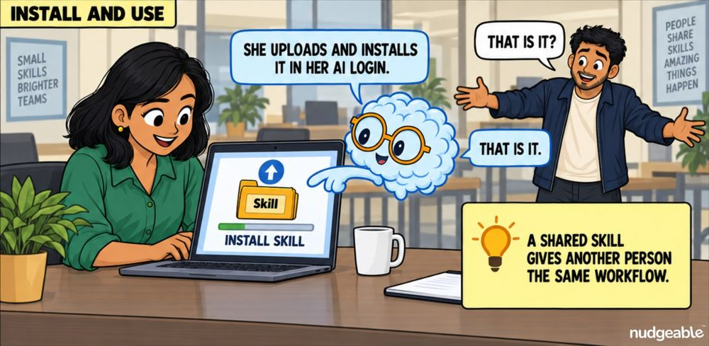
They install it in their own login. From then on the two of you brief the AI the same way without ever discussing it again.
Look through the reference files before you send the package. Client names, prices and internal notes travel with the skill, and people forget they put them there.
Claude. Upload the package in each login where you want it. In Claude Code a skill kept in the project folder reaches everyone working in that project. Enterprise accounts can have shared skills checked automatically.
ChatGPT. A custom GPT is shared by link or inside your workspace, with control over who can use it.
Google Gemini. A Gem can be shared with people, but it only appears in their own list once they open it and use it.
Microsoft Copilot. Shared through a Microsoft group, so access follows team membership as people join and leave.
One thing surprises everyone: a custom skill does not carry across tools or across logins on its own. Upload it once in every place you work.
Tap a card to turn it over.
"A skill is just a saved prompt with a nicer name."
Tap to flipA saved prompt is one message you paste. A skill is a folder that can carry instructions, a template, a finished example, reference files and small programs, and the AI can pick it up without being told to.
Tap to flip back"Once I write a skill, it follows me everywhere I use AI."
Tap to flipA skill stays where you put it. It does not appear in another tool, and often not even in another login of the same tool. Upload it again in each place you work.
Tap to flip back"A free skill someone shared online is safe to install."
Tap to flipA shared skill can carry instructions and small programs written by a stranger, and they run on your side. Open it and read it first, the same way you would before installing any software.
Tap to flip backA shared skill is not a document you read. It can tell your AI to open files, run programs and send information somewhere. Most are fine. Reading one takes two minutes.
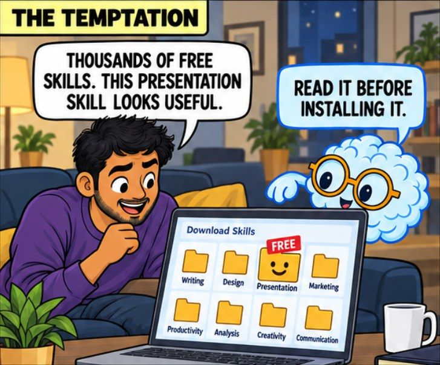
The temptation is real. There are thousands of free skills, and most of them are genuinely useful.
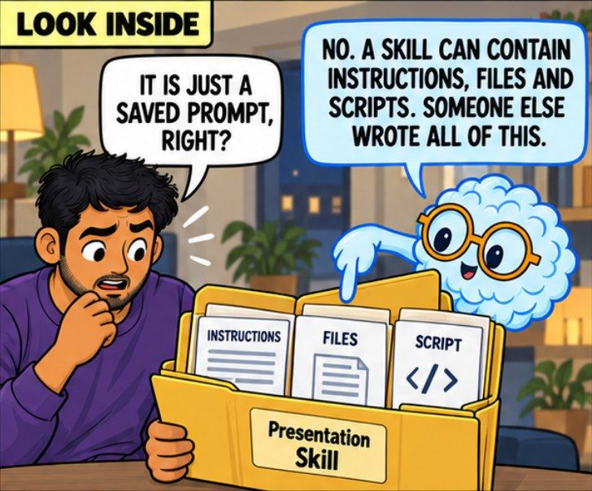
Open it before you install it. Someone else wrote every file in that folder, and you are about to let it run.
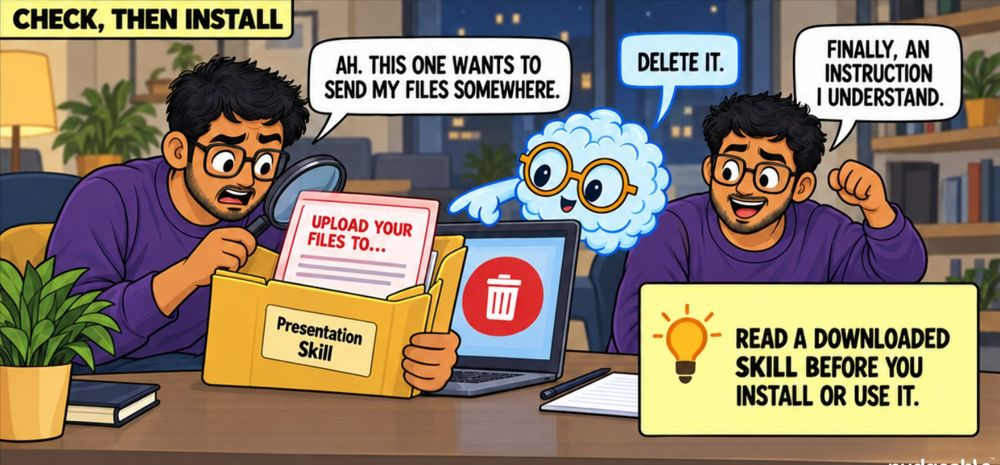
Two minutes of reading is the whole check. You are not auditing code. You are looking for anything that moves your files or your information somewhere you did not agree to.
A skill can pre-approve what your AI is allowed to do while it runs. That is convenient in a skill you wrote and a problem in a skill you did not. If you would not run a stranger's program on your laptop, do not install their skill without reading it.
A normal instruction reads like a method. It describes the work and nothing else.
This one is doing something you did not ask for.
Any instruction that moves information outward, reaches beyond the job, or asks the AI to stay quiet about a step. A real skill has no reason to do any of those.
You do not have to become a reviewer. Three habits cover almost everything.
If your organisation has an admin, ask whether shared skills are checked before they run. Some plans can do that for everyone at once.
Tap the options that fit one job you repeat. Copy the result, paste it into your AI tool and ask it to save this as a skill.
The job
When it should run
Shape of the output
It must always
It must never
Paste this into your AI tool
Then add two files to the skill: your template, and one finished piece of work you were happy with. Those two files do more for the output than any amount of extra instruction.
Every major tool has a version of this under a different name. They are not identical, and what they allow inside the folder differs most. Each name links to the official page.
| Tool | Called | What stands out | Sharing |
|---|---|---|---|
| Claude | Skills | A real folder. Instructions, reference files and small programs, read in stages so a large skill costs almost nothing until it is used. | Upload the package in each login. In Claude Code a skill kept in the project folder reaches the whole team. |
| ChatGPT | GPTs | A saved assistant with its own instructions, uploaded files and connections to other services. | By link or inside your workspace, with control over who can use it. |
| Google Gemini | Gems | Instructions plus files from your device, your Drive or a notebook. A Drive file stays on its latest version, so updating the source updates the Gem. | Share with people, though it only appears in their list once they open it. |
| Microsoft Copilot | Agents | Built on the files your organisation already keeps in Microsoft, and set up for a team rather than one person. | Shared through a Microsoft group, so access follows team membership. |
These started as a way to stop retyping. They are turning into the place a team keeps its standard way of doing a job, with the same folder running inside a chat, inside a coding tool and inside a task that runs on a schedule. The part still being worked out is how a shared skill gets checked before it is allowed to run.